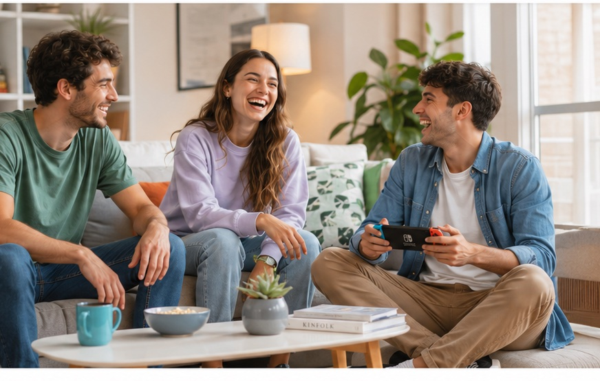

Lifestyle Match
Cruzamos hábitos, horarios, presupuesto, zona y estilo de vida. No es un clasificado: es un match entre personas y entre persona y espacio.
Match por hábitos, horarios, presupuesto y zona: compartir casa con la persona correcta, no con la primera que aparece.
Sin garantía propietaria y sin adelantar seis meses. Encontrá con quién vivir, dónde vivir y cómo formalizarlo, en un solo lugar.

Cruzamos hábitos, horarios, presupuesto, zona y estilo de vida. No es un clasificado: es un match entre personas y entre persona y espacio.
Identidad verificada, publicaciones curadas con precio total a la vista y trazabilidad de pagos. El objetivo es sacarte del riesgo de los canales informales.
Dividís alquiler, expensas, servicios e internet. Es la diferencia entre elegir el barrio donde querés vivir y resignarte al que te alcanza.
Por qué existe Nidos
del ingreso se va en el alquiler. Era 45% en 2024. El estándar internacional recomienda no pasar del 30%.
Encuesta Inquilina 2025, ACIJ (AMBA)de brecha por mes entre el sueldo promedio de un joven ($1.212.295) y lo que cuesta vivir solo ($2.085.853).
Cálculo propio: sueldo joven promedio vs. costo de vida individual, AMBA 2026de los jóvenes sigue en casa de sus padres por imposibilidad económica, no por elección.
Fundación Tejido Urbanode alquiler por adelantado es lo mínimo que te piden si no tenés garantía propietaria. Sin ella, no entrás.
Nuestro relevamiento en comunidades de vivienda, AMBA 2026Cómo funciona
Presupuesto, zona, flexibilidad y hábitos de convivencia. Con preguntas guiadas, para que tus preferencias se vuelvan criterios de matching y no un texto libre que nadie lee.
Un score de compatibilidad doble: con quién podrías convivir bien y qué espacios reales son aptos para compartir. Con precio total, reglas y requisitos a la vista desde el primer momento.
Chat seguro dentro de la plataforma y perfiles con identidad verificada. Podés ver quién más está interesado en el mismo lugar que vos y coordinar con esa persona.
Garantía digital en lugar de garante propietario, acuerdo de convivencia, contrato y pagos trazables. Y un canal de soporte si después algo se complica.
Estimación orientativa para comparar: la garantía digital ronda el 6% del alquiler anual y el costo final depende de cada caso. Lo que no cambia es el orden de magnitud contra los meses de adelanto que pide el mercado.
Contra qué competimos de verdad
| Grupos de |
Airbnb mensual |
Inmobiliaria tradicional |
Nidos | |
|---|---|---|---|---|
| Entrás sin garantía propietaria | Sí | Sí | No | Sí |
| Identidad verificada | No | Sí | Sí | Sí |
| Compatibilidad de convivencia | No | No aplica | No | Sí |
| Precio total claro desde el inicio | Casi nunca | Sí | A veces | Sí |
| Contrato con respaldo legal | No | Términos de uso | Sí | Sí |
| Soporte si hay conflicto | No | Limitado | Limitado | Sí |
| Costo mensual | Gratis | El más alto | Comisiones altas | Bajo |
Nidos no compite por ser lo más barato, sino por hacer la vivienda compartida posible, segura y humana para quien el mercado formal dejó afuera.
Preguntas frecuentes
¿Te quedó algo afuera? Escribinos a hola@nidos.com.ar
Todavía no. Estamos validando la propuesta antes de construirla, y esta página es una lista de espera real. Si dejás tus datos vas a ser de los primeros en entrar cuando abramos, y tus respuestas van a definir qué construimos primero. No hay ningún pago involucrado en esta etapa.
Reemplaza al garante propietario: Nidos respalda al propietario frente al incumplimiento, y vos pagás un porcentaje del alquiler anual en lugar de adelantar seis meses o un año. Para un alquiler de $400.000 son cerca de $288.000 una vez, contra los $2.400.000 que hoy tenés que adelantar sin garantía.
Validación de identidad con documento, chequeo de antecedentes según lo que la ley permite, y reputación construida dentro de la plataforma. Los espacios publicados también pasan por curaduría: precio total visible, reglas claras, requisitos de ingreso y validación de quien ofrece.
Es el riesgo que más nos preocupa, así que no lo dejamos afuera del producto. Hay un acuerdo de convivencia firmado al inicio, un canal de reporte durante todo el alquiler y mediación de Nidos si hay un conflicto. Nuestro objetivo no es solo que te muden: es que te quedes.
Arrancamos por AMBA, con foco en los barrios con buena conexión a universidades y centros de trabajo. Después Gran Córdoba, Gran Rosario y Gran Mendoza. Contanos tu zona en el formulario: el orden lo define la demanda que registremos acá.
Sí, y nos interesa mucho. Da igual si alquilás y querés sumar a alguien para que las cuentas cierren, o si tenés una propiedad con una habitación libre. Elegí “Tengo lugar para compartir” arriba y las preguntas se adaptan a tu caso.
Seis preguntas, dos minutos. Tus respuestas definen qué construimos primero — y cuando abramos cada zona, la lista se recorre en orden de llegada.